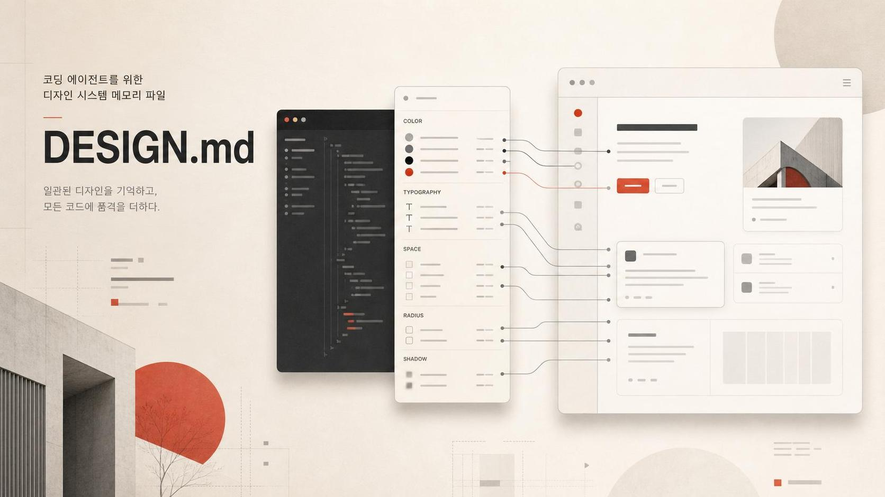

원본: google-labs-code/design.md
스펙: DESIGN.md Format
철학: DESIGN.md Philosophy
CLI: @google/design.md on npm
요즘 코딩 에이전트에게 코드를 맡기면 기능은 꽤 잘 만든다. 문제는 UI다.
첫 화면은 그럴듯하다. 그런데 다음 컴포넌트를 만들면 색이 조금 달라진다. 버튼 radius가 바뀐다. 카드 여백이 흔들린다. 페이지마다 다른 제품처럼 보인다.
사람 디자이너라면 바로 말한다. “이거 우리 브랜드 톤이 아니잖아.” 하지만 에이전트는 보통 현재 프롬프트와 주변 파일만 보고 즉흥적으로 결정을 내린다. Google Labs Code의 DESIGN.md는 바로 이 지점을 찌른다.
DESIGN.md는 코딩 에이전트를 위한 디자인 시스템 메모리 파일이다.
AGENTS.md나 CLAUDE.md가 “이 프로젝트에서 에이전트가 어떻게 일해야 하는가”를 알려준다면, DESIGN.md는 “이 제품은 어떻게 보여야 하는가”를 알려준다.

숫자만 주면 에이전트는 분위기를 모른다
DESIGN.md는 두 층으로 구성된다.
---
name: Heritage
colors:
primary: "#1A1C1E"
tertiary: "#B8422E"
typography:
h1:
fontFamily: Public Sans
fontSize: 3rem
rounded:
sm: 4px
spacing:
md: 16px
---
## Overview
Architectural Minimalism meets Journalistic Gravitas.
The UI evokes a premium matte finish — a high-end broadsheet or contemporary gallery.위쪽 YAML front matter에는 기계가 읽기 쉬운 디자인 토큰이 들어간다. 색상, 타이포그래피, spacing, rounded/radius, component token 같은 값들이다.
아래쪽 Markdown 본문에는 사람이 읽을 수 있는 디자인 의도가 들어간다. “고급 브로드시트 신문 같은 무게감”, “따뜻한 석회색 배경”, “Boston Clay 색상은 유일한 상호작용 accent” 같은 설명이다.
여기서 중요한 건 숫자만으로는 디자인이 전달되지 않는다는 점이다.
#B8422E라는 값은 에이전트에게 색상을 알려준다. 하지만 그 색을 어디에 써야 하는지, 얼마나 아껴 써야 하는지, 어떤 감정을 만들어야 하는지는 알려주지 않는다. DESIGN.md는 이 간극을 산문으로 메운다.
Google의 철학 문서도 이 점을 강조한다. 좋은 디자인 설명은 “modern, clean, trustworthy” 같은 일반 형용사 묶음이 아니다. 특정한 참조점을 가져야 한다. 예를 들어 “1970년대 명문대 대학원 세미나 핸드아웃”이라는 한 문장은 여백, 장식 없음, 종이 질감, modest typography 같은 제약을 한꺼번에 불러온다.
디자인 토큰은 값을 고정한다. 디자인 산문은 판단을 고정한다.
에이전트에게 필요한 건 둘 다다.
왜 지금 DESIGN.md인가: 문서가 에이전트의 인터페이스가 되고 있다
코딩 에이전트 시대에는 문서 파일이 점점 인터페이스가 되고 있다.
README.md: 사람과 에이전트가 프로젝트의 표면을 이해한다.AGENTS.md/CLAUDE.md: 에이전트가 작업 규칙을 이해한다.MEMORY.md: 세션을 넘어 유지해야 할 맥락을 저장한다.DESIGN.md: 에이전트가 시각 정체성을 유지한다.
이 흐름의 핵심은 “프롬프트 한 번”이 아니라 저장된 컨텍스트다. 에이전트는 매번 새로 디자인 감각을 추측하는 대신, 프로젝트 루트의 DESIGN.md를 읽고 그 안의 토큰과 설명을 재사용할 수 있다.
특히 프론트엔드 작업에서 이 차이가 크다. LLM은 Tailwind class를 잘 조합한다. 하지만 일관된 디자인 시스템을 장기간 유지하는 데는 약하다. 그래서 사람은 계속 이런 피드백을 반복한다.
- “이 버튼은 너무 SaaS 랜딩페이지 같아.”
- “우리 앱은 더 editorial하게 가야 해.”
- “accent color는 CTA에만 써.”
- “카드는 둥글게 하지 말고 얇은 구분선(rule)으로 나눠.”
DESIGN.md는 이런 말을 매번 채팅으로 다시 하지 않게 해준다. 한 번의 취향 피드백을 프로젝트의 지속 규칙으로 승격시키는 것이다.
스펙은 작다. 그래서 실제 프로젝트에 넣기 쉽다
현재 DESIGN.md는 alpha 포맷이다. 스키마는 일부러 작다.
version: <string>
name: <string>
description: <string>
colors:
<token-name>: <Color>
typography:
<token-name>: <Typography>
rounded:
<scale-level>: <Dimension>
spacing:
<scale-level>: <Dimension | number>
components:
<component-name>:
<token-name>: <string | token reference>색상은 hex뿐 아니라 rgb(), hsl(), oklch() 같은 CSS color도 받을 수 있다. 토큰 참조는 {colors.primary} 같은 형태다. component token에는 backgroundColor, textColor, typography, rounded, padding, height, width 같은 속성이 들어간다.
본문 섹션에는 권장 순서가 있다.
- Overview
- Colors
- Typography
- Layout
- Elevation & Depth
- Shapes
- Components
- Do’s and Don’ts
흥미로운 점은 알 수 없는 섹션이나 커스텀 키를 무조건 막지 않는다는 것이다. DESIGN.md는 Figma나 CSS를 대체하려는 폐쇄 스펙이 아니다. 에이전트가 읽을 수 있는 디자인 맥락 파일에 가깝다.
그러니 팀마다 필요한 규칙을 확장해서 넣으면 된다. motion, iconography, chart style, data density, empty state tone, dashboard density 같은 것들 말이다.
CLI가 붙으면 디자인 문서도 리뷰 가능한 객체가 된다
패키지는 npm에 @google/design.md로 올라와 있다. 최신 버전은 0.3.0이며, CLI는 design.md와 Windows 호환용 designmd alias를 제공한다.
npx @google/design.md lint DESIGN.mdlinter는 다음 같은 문제를 잡는다.
- 깨진 토큰 참조:
{colors.primary}가 실제로 없는 경우 - primary color 누락
- typography token 누락
- component의 text/background contrast가 WCAG AA 기준보다 낮은 경우
- optional section 누락
- section order 문제
colours처럼 schema key 오타로 보이는 top-level key
또 diff도 된다.
npx @google/design.md diff DESIGN.md DESIGN-v2.md디자인 시스템 변경에서 색상 토큰이 추가됐는지, 삭제됐는지, 경고가 늘어났는지 비교할 수 있다. 즉, 코드 리뷰처럼 디자인 컨텍스트도 리뷰 가능한 객체가 된다.
export도 지원한다.
npx @google/design.md export --format json-tailwind DESIGN.md > tailwind.theme.json
npx @google/design.md export --format css-tailwind DESIGN.md > theme.css
npx @google/design.md export --format dtcg DESIGN.md > tokens.jsonTailwind v3 theme JSON, Tailwind v4 @theme CSS, W3C Design Tokens Format(DTCG)으로 내보낼 수 있다. 그래서 DESIGN.md는 단순한 프롬프트 파일이 아니라 실제 빌드/검수 파이프라인의 일부가 될 수 있다.
이건 디자이너를 없애는 파일이 아니다
오히려 반대다.
DESIGN.md는 디자이너의 암묵지를 에이전트가 읽을 수 있는 형태로 적는 파일이다. “primary는 이 색”, “radius는 8px” 같은 값만 적으면 평범한 token file과 다르지 않다. 진짜 가치는 이런 문장에 있다.
Vermilion is the single accent and appears only inside diagrams and chart annotations — never on typography, never on page numerals, never on metadata of any kind.
이 문장은 단순한 색상 규칙이 아니다. 제품의 성격을 정한다. accent가 희소해야 한다는 철학, 어디에 쓰면 안 되는지, 어디까지 선을 넘으면 안 되는지까지 담는다.
코딩 에이전트에게 필요한 것도 바로 이 수준의 제약이다. LLM은 빈칸을 잘 채우지만, 빈칸을 너무 많이 주면 평균적인 SaaS UI로 수렴한다.
DESIGN.md는 “평균으로 가지 말고, 이 세계관 안에서 만들어라”라고 말하는 장치다.
당장 써본다면 이렇게 시작하면 된다
추천하는 사용법은 세 가지다.
1) 프로젝트 루트에 DESIGN.md를 둔다
AGENTS.md 옆에 둔다. 그리고 코딩 에이전트에게 작업 시작 전에 DESIGN.md를 읽으라고 명시한다. 규칙 파일과 디자인 파일을 나란히 두는 것이다.
2) 디자인 리뷰 피드백을 DESIGN.md로 승격한다
채팅에서 “버튼이 너무 둥글다”라고 한 번 말하고 끝내지 않는다. 그 규칙을 DESIGN.md의 Components 또는 Do’s and Don’ts에 넣는다. 그래야 다음 세션에서도 반복되지 않는다.
3) CI에 lint를 넣는다
깨진 토큰 참조나 contrast 문제는 자동으로 잡을 수 있다. UI 품질을 전부 자동화할 수는 없지만, 최소한 디자인 시스템 문서가 깨지는 건 막을 수 있다.
작게 시작하려면 더 단순해도 된다. colors, typography, spacing 몇 개와 “우리 제품은 어떤 느낌이어야 하는가”를 설명하는 Overview 한 단락이면 충분하다. 첫 버전의 목적은 완벽한 디자인 시스템이 아니라, 에이전트가 매번 평균값으로 돌아가지 않게 하는 기준점이다.
에이전트 시대의 디자인 시스템은 문서가 된다
DESIGN.md가 중요한 이유는 파일 포맷 하나가 새로 나왔기 때문이 아니다.
더 큰 흐름은 이거다.
에이전트가 잘 일하려면, 조직의 암묵지를 읽을 수 있는 파일로 바꿔야 한다.
코딩 규칙은 AGENTS.md가 되고, 장기 맥락은 MEMORY.md가 되고, 시각 정체성은 DESIGN.md가 된다. 이것들은 사람이 읽는 문서이면서 동시에 에이전트가 실행에 참고하는 인터페이스다.
그래서 DESIGN.md는 단순한 디자인 토큰 포맷보다 흥미롭다. 코딩 에이전트가 “기능은 맞는데 우리 제품 같지는 않은” UI를 만드는 문제를, 프롬프트가 아니라 지속 가능한 프로젝트 파일로 풀려고 한다.
프론트엔드를 에이전트에게 맡기고 있다면, 다음 작업은 새 UI를 하나 더 만드는 게 아닐 수 있다.
먼저 DESIGN.md를 쓰는 것이다. 그래야 에이전트는 화면을 만드는 사람이 아니라, 제품의 세계관 안에서 판단하는 동료가 된다.